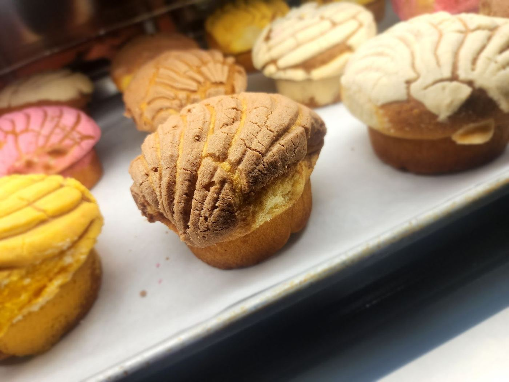
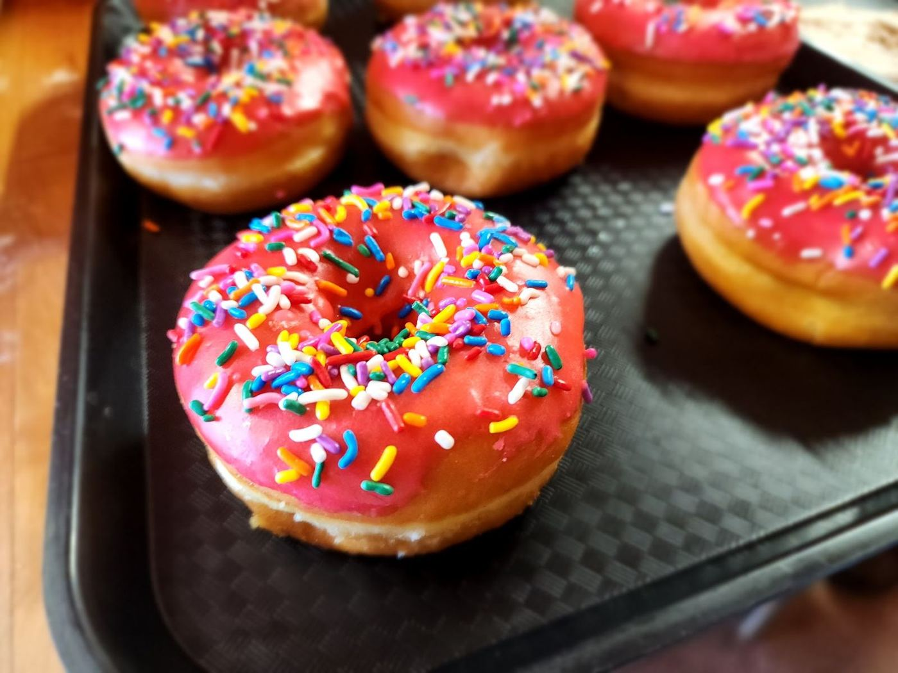
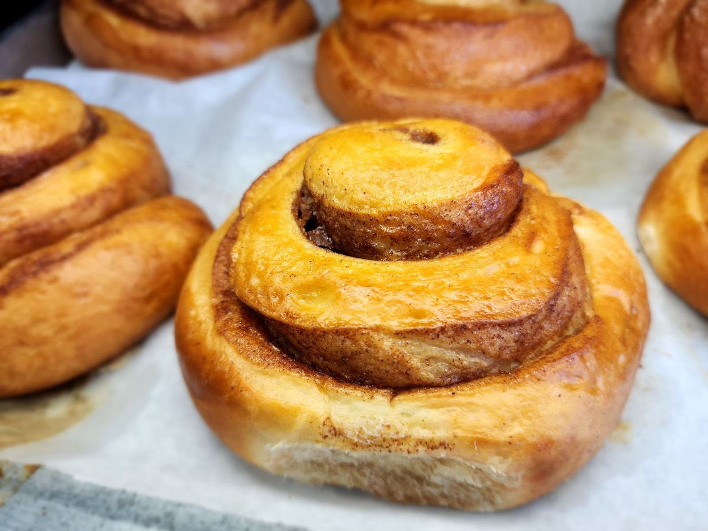

Pan dulce & tamales, fresh
A small Mexican bakery on AZ-89A in Cottonwood, AZ — pick up pastries, tamales and burritos. 4.8★ from 13 Google reviews.
Call aheadGet directions


Hecho en casa
Pan dulceConchas, cuernos, rolls and filled pastries.
TamalesThick, moist and full of filling.
Breakfast burritosMachaca and more, made to go.
DonutsSprinkled and chocolate glazed.
What people say
Wow, I just left the bakery and tried two of their tamales. They are divine!! I’m from Houston Texas. I’m pretty picky when it comes to my tamales. Especially because my husband has a Mexican restaurant. These are moist. NOT DRY If you know what I mean .. They are thick and full of chicken! They are absolutely fantastic. I did purchase some of their pastries, but I ate so many tamales. Haven’t had a chance to eat them yet. They are originally from Mexico City and their selection is bountiful. Get there early, so that way they don’t run out! Next time I’m in Cottonwood I will definitely stop…
Went for breakfast before a hike and it was a perfect way to start the day! The pan dulce was delicious! We also got a burrito and one of the filled baguettes they had and they were also amazing. Really great place to stop for some pastries and breakfast would 100% recommend! The staff was very friendly and helpful plus the prices were very reasonable!
100% Recommend to anyone wanting cheap, fast, yet great food. Went in there thinking I was gonna spend over $15, I got a chorizo-filled something and it was only >$3. The guy is nice and seems like he actually wants to be there. Everything seems to be home-made, especially the taste.